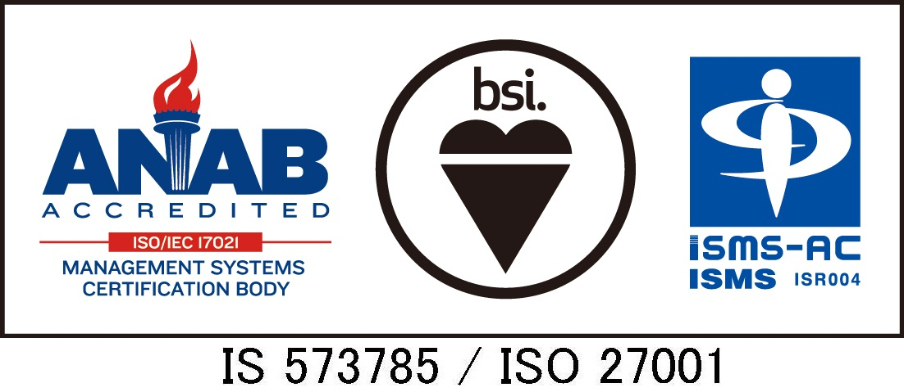

信用情報について
信用情報の安全管理について
大切な信用情報を管理する信用情報機関として個人情報保護方針を定め、個人情報保護法および関連法令・各種ガイドライン等を遵守し、万全の管理体制をもって信用情報の安全管理に努めています。
会員制度と運営体制
JICCでは会員制度で運営しており、入会に際しては一定の会員資格要件および信用情報の取り扱いに関する規定を設けており、信用情報の適正利用・消費者保護を含めた安全管理体制の確認などの審査を実施しています。 さらに、会員会社の利用状況や信用情報の正確性を確保するための各種モニタリングを行い、定期調査や実地調査等を通じ、信用情報の安全管理措置が継続して維持されていることを確認するなど、信用情報の保護に努めています。
信頼性の高いシステム構成
大地震などの広域災害が発生した場合にも業務を安定的に継続できる信頼性の高いシステムを構築しています。
- ・主要機器の冗長化および免震構造のシステムセンター
- ・会員会社との専用ネットワークによる接続
- ・信用情報の漏洩、改ざん防止に向けた暗号化、認証、検知態勢
- ・安全管理基準やガイドラインに準拠した万全なセキュリティ対策
- ・広域災害を想定したバックアップセンターの設置
情報セキュリティマネジメントシステム
信用情報の安全管理をより確実なものとするために、情報セキュリティマネジメントシステムの国際規格である「ISO/IEC27001：2013」を取得し、第三者機関による定期的な審査のもと、情報セキュリティの強化に努めています。

「ISO/IEC27001：2013」の認証取得概要
- ・取得認証規格 ：
- ISO/IEC27001:2013/JIS Q 27001:2014
- ・認証登録番号 ：
- IS 573785
- ・認証登録範囲 ：
- 信用情報の収集・登録・管理・提供並びに交流
- ・審査登録機関 ：
- ＢＳＩグループジャパン株式会社
- ・初回認証登録日：
- 平成16年 4月 2日
- ・最新更新日 ：
- 平成29年 3月15日
- ・最新更新日 ：
- 平成29年 3月15日
- ・認定機関 ：
- JIPDEC 一般財団法人日本情報経済社会推進協会
ANAB 米国規格協会―米国品質協会による認定機関
※安全管理に関する詳しい内容はこちらより。
※会員との運営体制に関する詳しい内容はこちらより。
※外部監査等の取り組み状況に関する詳しい内容はこちらより。
![[アイコン]信用情報機関とは](../../images/about/img01_cntarea02.png)
![[アイコン]加盟会員について](../../images/about/img02_cntarea02.png)
![[アイコン]会社概要](../../images/about/img03_cntarea02.png)